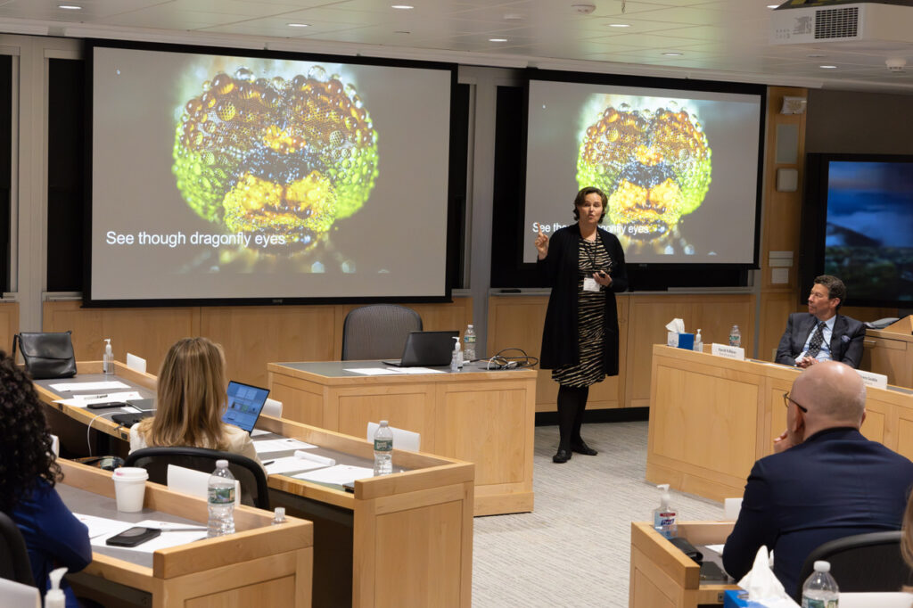
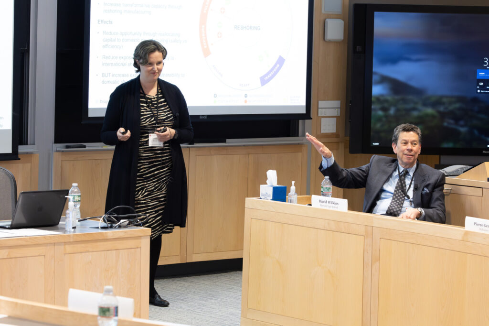

Senior leadership · April 2024
Senior Leadership Workshop on Dragonfly Thinking
On 2 April 2024 the Center on the Legal Profession hosted an invitation-only senior leadership workshop — Institutional Strategies for Balancing Risks, Rewards, and Resiliency in a VUCA World — at Harvard Law School. Chief legal officers and managing partners worked through the frameworks underpinning this project: the Risks, Rewards, and Resilience framework for mapping complex decisions, and the dragonfly methodology for integrating multiple lenses — with live demonstrations letting participants interact with the AI tools to think through real decision problems.
Read the recap→